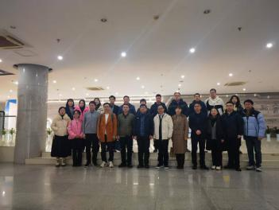
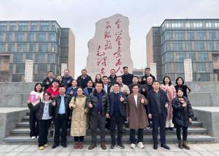
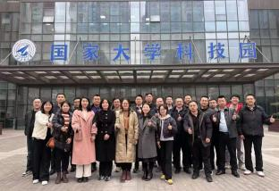
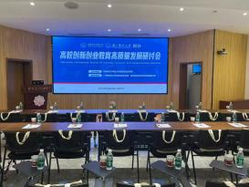
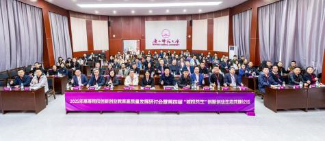
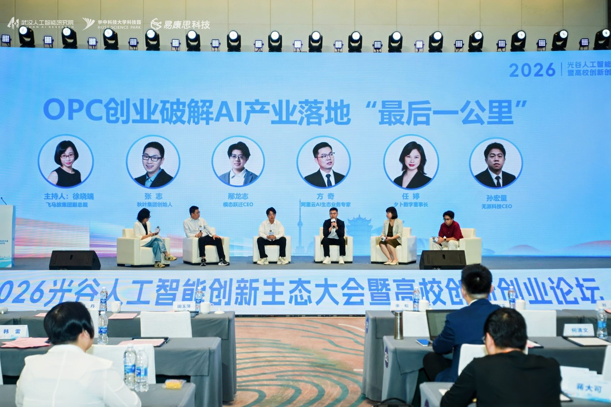

2024年8月，参与承办中国高等教育学会创新创业教育分会2024学术年会社会创业教育报告会
2025年2月，与西安电子科技大学创新创业学院承办创新创业教育高质量发展研讨会
2026年1月，与广西师范大学、广东省高等学校毕业生就业促进会联合举办创新创业教育研讨会
2026年4月，与东湖高新区科创局、华中科技大学启明学院等联合承办首届光谷OPC社区与创新创业学院院长论坛






创新创业教育培训
【 举办创新创业教育研讨会，探讨双创教育应用与实践 】